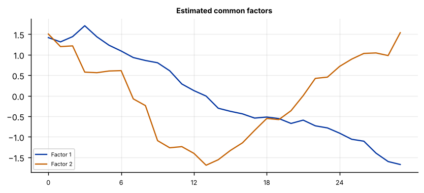
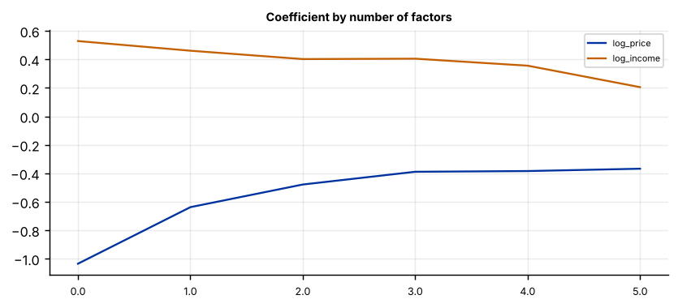

Run this model on your own data in Open Econometric Systems →
Step 1The question and the model
What if the common shocks hit units unequally? The model is
where \(f_t\) is a vector of \(r\) unobserved common factors and \(\lambda_i\) are unit-specific loadings. If \(x_{it}\) is correlated with \(\lambda_i' f_t\), omitting the interaction biases \(\beta\) even when unit and period effects are included. Bai (2009) shows that \(\beta\) can be estimated by iterating between the slope given the factors and the factors given the slope: extract the first \(r\) principal components of the residual matrix, subtract them, re-estimate \(\beta\), and repeat. This needs both \(N\) and \(T\) to be reasonably large.
Three checks before you trust the estimates
- Is there cross-sectional dependence left after two-way fixed effects? The average pairwise correlation of the residuals tells you whether factors are needed.
- How many factors? Information criteria help, but they often choose the largest number you allow. Look at how the coefficients move with \(r\).
- Are the standard errors reliable? The engine reports the homoskedastic asymptotic standard errors without bias correction. They assume that T and N are both large.
How to write it: the model
We estimate the demand for cigarettes in 46 US states over 1963-92 with the interactive fixed effects estimator of Bai (2009). Log per-capita sales are regressed on log price and log income, and the model includes state and year effects and two unobserved common factors with state-specific loadings, which capture national shocks such as changing attitudes to smoking that affect states differently. The number of factors is chosen by looking at the Bai-Ng information criterion and at the sensitivity of the coefficients to the number of factors. Standard errors are the asymptotic standard errors of Bai (2009).
Step 2Load the data and look at the dependence left by two-way fixed effects
import numpy as np
import pandas as pd
import oes_engine as oes # pip install -e open-econometric-systems/oes-engine
data = open("cigar.csv").read()
df = pd.read_csv("cigar.csv")
print(f"{df.state.nunique()} states, {df.year.min()}-{df.year.max()}, observations per state: {sorted(int(n) for n in df.groupby('state').size().unique())}")
print(df[["log_sales", "log_price", "log_income"]].describe().round(2).loc[["mean", "std", "min", "max"]])
spec = dict(y="log_sales", x=["log_price", "log_income"], unit="state", time="year", factors=2)
r0 = oes.run("ife", data, dict(spec, factors=0))
oes.show(r0, "Interactive fixed effects estimates")
oes.show(r0, "Cross-section dependence")46 states, 63-92, observations per state: [30]
log_sales log_price log_income
mean 4.79 -0.11 4.55
std 0.22 0.15 0.21
min 3.98 -0.61 3.77
max 5.70 0.36 5.12
Interactive fixed effects estimates (0 factors, twoway additive effects), dependent variable: log_sales
Coefficient Std. err. z p-value
Variable
log_price -1.0349 0.0404 -25.63 0.0
log_income 0.5285 0.0453 11.67 0.0
Note: Standard errors are the homoskedastic asymptotic ones of Bai (2009) without bias correction; they are reliable when T and N are both large and the errors are close to independent. Check that the conclusions do not move with the number of factors.
Cross-section dependence of the residuals (Pesaran CD)
CD statistic p-value Mean |pairwise correlation|
Model
No factors -1.91 0.0566 0.452
Note: H0: errors are cross-sectionally independent. The CD statistic is a signed average and can stay large when the remaining correlations are of mixed sign, so look at the mean absolute correlation too.How to read it
The panel is balanced: 46 states for 30 years (1963-92). Without any factors the model is the two-way fixed-effects regression, and it gives a price elasticity of -1.03 (standard error 0.040) and an income elasticity of 0.53 (0.045). The residuals are still strongly dependent across states: the average absolute pairwise correlation is 0.45, which means that a large common component remains in the errors. The Pesaran CD statistic (-1.91, p = 0.057) is a signed average and understates this, because positive and negative correlations offset each other. If this common component is correlated with price and income, the two-way estimates are biased.
Step 3Estimate with two factors
r = oes.run("ife", data, spec)
oes.summary(r)
oes.show(r, "Interactive fixed effects estimates")
oes.show(r, "Cross-section dependence")
oes.plot(r, "Estimated common factors", ncols=1, size=(6.5, 3))Units: 46
Periods: 30
Factors: 2
Iterations: 47
IC chooses: 5
Interactive fixed effects estimates (2 factors, twoway additive effects), dependent variable: log_sales
Coefficient Std. err. z p-value
Variable
log_price -0.4788 0.0248 -19.33 0.0
log_income 0.4020 0.0329 12.23 0.0
Note: Standard errors are the homoskedastic asymptotic ones of Bai (2009) without bias correction; they are reliable when T and N are both large and the errors are close to independent. Check that the conclusions do not move with the number of factors.
Cross-section dependence of the residuals (Pesaran CD)
CD statistic p-value Mean |pairwise correlation|
Model
No factors -1.91 0.0566 0.452
2 factors -3.58 0.0003 0.241
Note: H0: errors are cross-sectionally independent. The CD statistic is a signed average and can stay large when the remaining correlations are of mixed sign, so look at the mean absolute correlation too.
How to read it
With two factors the price elasticity falls from -1.03 to -0.48 (standard error 0.025) and the income elasticity from 0.53 to 0.40 (0.033). The average absolute residual correlation falls from 0.45 to 0.24, so the factors remove about half of the common structure. The CD statistic does not improve (-3.58, p = 0.0003), for the reason given above, and this is why the mean absolute correlation is the more useful column. The estimator converged in 47 iterations. The factors are identified only up to rotation, so the lines in the chart describe a two-dimensional space of national shocks, and should not be read as two separately interpretable series.
Step 4How many factors?
oes.show(r, "Choosing the number")
oes.plot(r, "Coefficient by number", ncols=1, size=(6.5, 3))Choosing the number of factors (Bai-Ng IC_p1 on the residuals)
Residual variance b(log_price) b(log_income) IC
Factors
0 0.0053 -1.0349 0.5285 -5.2461
1 0.0015 -0.6378 0.4608 -6.3512
2 0.0009 -0.4788 0.4020 -6.6860
3 0.0006 -0.3893 0.4048 -6.8763
4 0.0005 -0.3843 0.3557 -6.9659
5 0.0004 -0.3679 0.2049 -7.0369 *
Note: * minimises the criterion. With no factors the estimator is the fixed-effects (two-way) regression.
How to read it
The Bai-Ng criterion falls with every added factor and is smallest at the largest number allowed (5), so it does not settle the number of factors here. The price coefficient moves most at the start: -1.03 with none, -0.64 with one, -0.48 with two, -0.39 with three, and then -0.38 and -0.37 with four and five. The income coefficient is steady at 0.40 to 0.46 for one to four factors and drops to 0.20 with five, so it is not stable at the highest number. With 46 states and 30 years the panel is small for a method designed for large N and T, so I would report the range of the price elasticity (-0.64 to -0.37) and not a single value, and not push the number of factors higher.
Step 5Robustness: which additive effects are removed first
out = {}
for eff in ["twoway", "unit"]:
for q in [0, 1, 2, 3]:
rr = oes.run("ife", data, dict(spec, factors=q, effects=eff))
rows = rr["tables"][0]["rows"]
out[f"{eff}, r = {q}"] = [rows[0][1], rows[0][2], rows[1][1], rows[1][2]]
print(pd.DataFrame(out, index=["price", "s.e.", "income", "s.e."]).T.round(3))price s.e. income s.e. twoway, r = 0 -1.035 0.040 0.528 0.045 twoway, r = 1 -0.638 0.026 0.461 0.032 twoway, r = 2 -0.479 0.025 0.402 0.033 twoway, r = 3 -0.389 0.024 0.405 0.036 unit, r = 0 -0.702 0.018 -0.011 0.016 unit, r = 1 -0.648 0.014 0.517 0.025 unit, r = 2 -0.449 0.017 0.246 0.028 unit, r = 3 -0.298 0.022 0.395 0.033
How to read it
The conclusion on price depends on the effects, not just on the factors. With unit effects only (no year effects) the estimate is -0.70 with no factors and -0.65 with one, close to each other, and then falls to -0.45 and -0.30 with two and three. The income elasticity is -0.01 with no factors, because income trends are not separated from the common trend, then 0.52, 0.25 and 0.40, so it is the less reliable of the two coefficients. All variants agree that the elasticity of demand with respect to price is negative and well below the -1.03 of two-way fixed effects in absolute value once common factors are allowed.
Step 6Write the results
How to write it: results
Two-way fixed effects gives a price elasticity of cigarette demand of -1.03 (standard error 0.040) and an income elasticity of 0.53 (0.045), but the residuals remain strongly correlated across states (mean absolute pairwise correlation 0.45). With two interactive fixed effects (Bai 2009) the price elasticity is -0.48 (0.025) and the income elasticity 0.40 (0.033), and the mean absolute residual correlation falls to 0.24. The price elasticity decreases in absolute value as factors are added (-0.64 with one factor, -0.39 with three, -0.37 with five), and we therefore report it as lying between -0.64 and -0.37. The Bai-Ng criterion does not select a number of factors below the maximum considered, and the income elasticity is unstable at five factors (0.20). Standard errors are asymptotic and do not correct for bias from heteroskedasticity or serial correlation, and the panel (46 states, 30 years) is small for this estimator.
| Report | What | Where |
|---|---|---|
| Model | Factors, loadings, additive effects, standard errors | Step 1 |
| Data | Estimate with no factors and the dependence it leaves | Step 2 |
| Estimates | Two factors, residual dependence, estimated factors | Step 3 |
| Number of factors | Information criterion and coefficient paths | Step 4 |
| Robustness | Unit-only effects, one to three factors | Step 5 |
References. Bai, J. (2009), "Panel Data Models with Interactive Fixed Effects," Econometrica 77. Bai, J. and Ng, S. (2002), "Determining the Number of Factors in Approximate Factor Models," Econometrica 70. Pesaran, M. H. (2006), "Estimation and Inference in Large Heterogeneous Panels with a Multifactor Error Structure," Econometrica 74. Pesaran, M. H. (2015), "Testing Weak Cross-Sectional Dependence in Large Panels," Econometric Reviews 34. Baltagi, B. and Levin, D. (1992), "Cigarette Taxation: Raising Revenues and Reducing Consumption," Structural Change and Economic Dynamics 3.